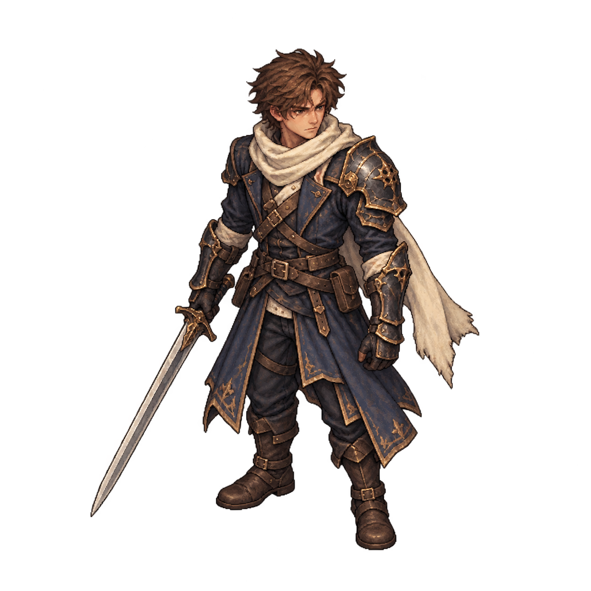
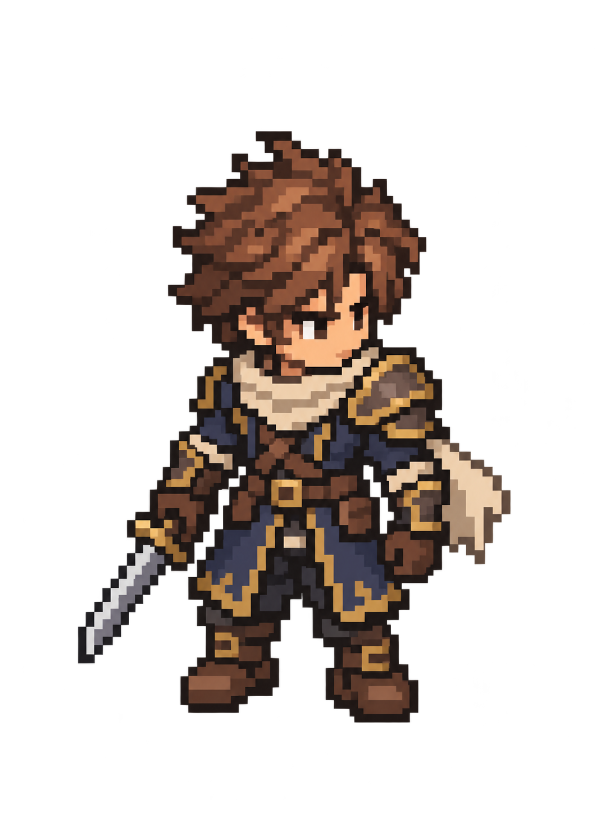
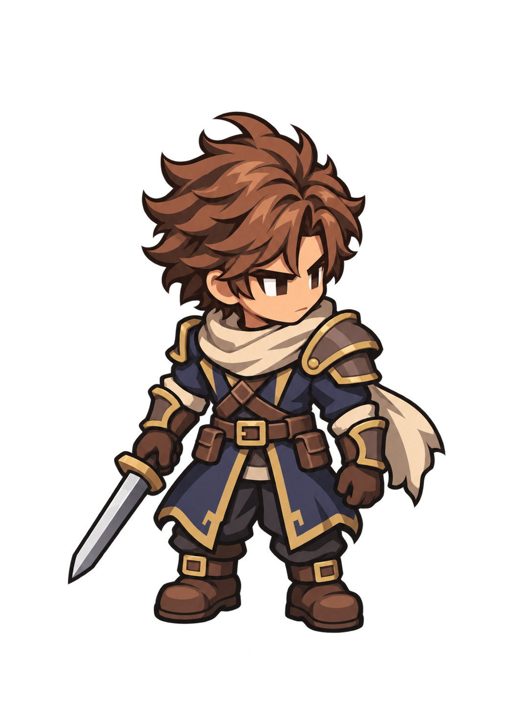

Approved identityCurrent painted reference

85px visible height · white / dark / terrain-color
Original costume and handedness authority. Not an alternative new sprite design.
A · Nostalgic compactPixel-style candidate

85px visible height · white / dark / terrain-color
Stronger face, scarf and weapon readability. Pixel-styled high-resolution source, not a verified native 64px grid.
B · HD compactCel-shaded 2D candidate

85px visible height · white / dark / terrain-color
Same compact silhouette with clean contours. Simplified armor/trim and rounder face still need art approval.